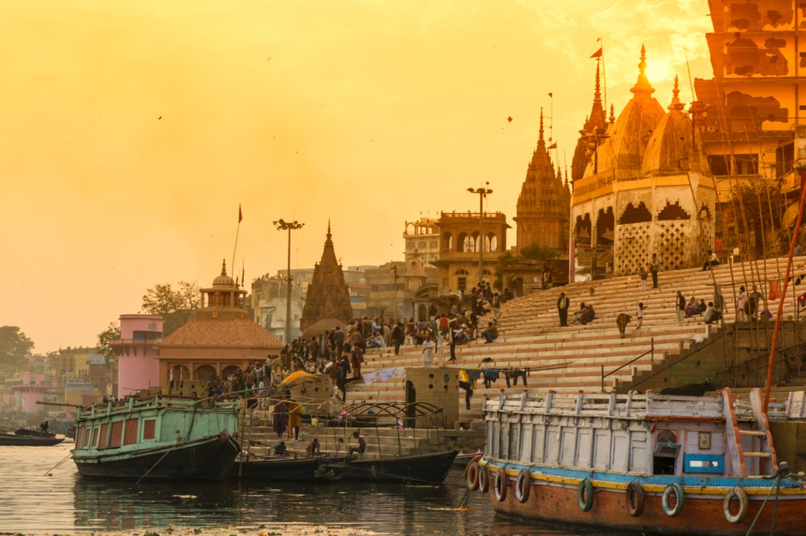
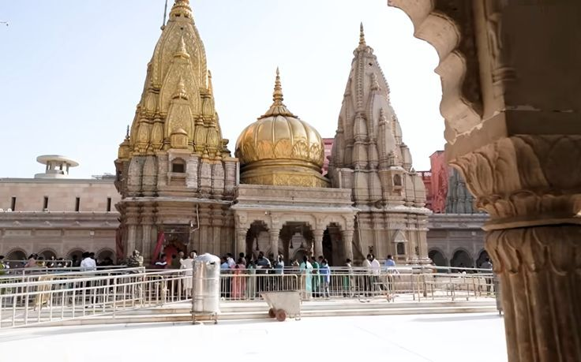
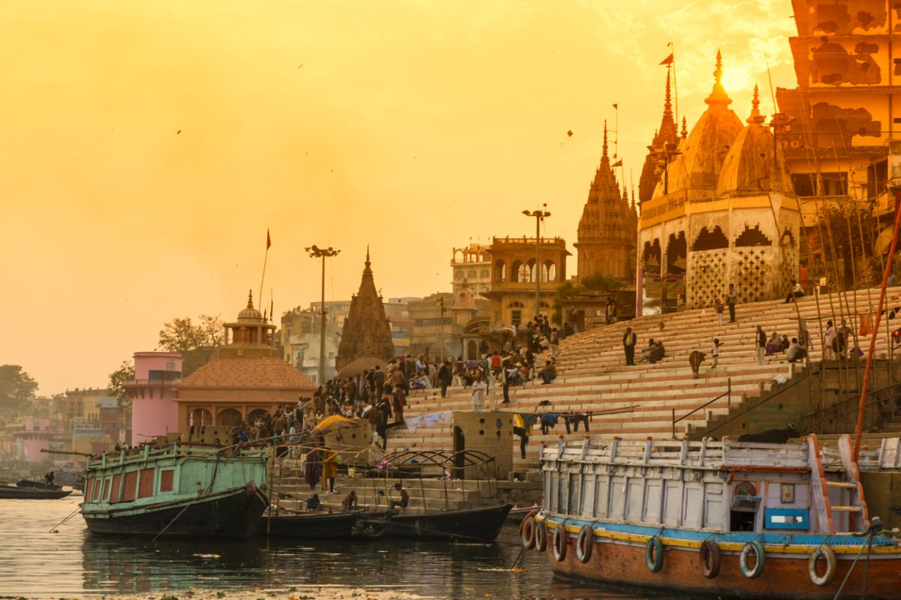
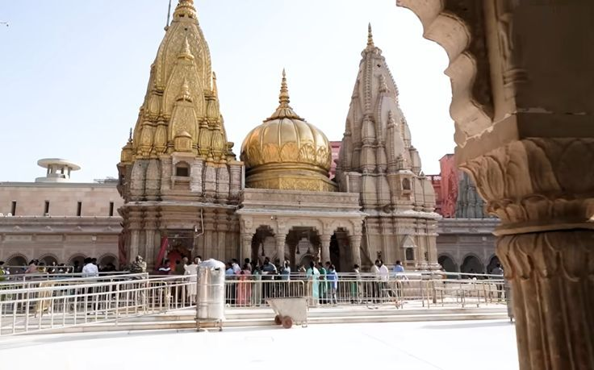
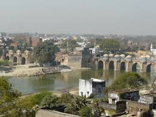

- Varanasi
- Kashi viswanath temple Kashi viswanath
- Dashashwamedh dashashwamedh-gha
- Sarnath
- Mani karnika ghat
- JAUNPUR jaunpur
- AGRA
- JHANSI
Varanasi is the India of your imagination. This is one of the world's oldest continually inhabited cities,
and one of the holiest in Hinduism. Pilgrims come to the Ganges here to wash away sins in the sacred waters,
to cremate their loved ones, or simply to die here, hoping for liberation from the cycle of rebirth.
varanasi
Standing on the western bank of India's holiest river Ganges,
Varanasi is the oldest surviving city of the world and the cultural capital of India.
It is in the heart of this city that there stands in its fullest majesty the Kashi Vishwanath
Temple in which is enshrined the Jyotirlinga of Shiva, Vishweshwara or Vishwanath.
 



Dashashwamedh Ghat is situated in the spiritual heart of India.
Varanasi in the northern state of Uttar Pradesh.
Dashashwamedh Ghat is the most vibrant and important ghat in Varanasi, located on the banks of the sacred river Ganges.
The ghat is steeped in mythology and history, believed to be the place where Lord Brahma performed the Dasa-Ashwamedha sacrifice.
This bustling ghat is the epicentre of the cultural and spiritual life of Varanasi.
The city of Jaunpur is well known for its political and historical significance.
Many people travel to the Varanasi region every year just to see the city of Jaunpur.
Numerous mosques, tombs, and madrassas, most of which were constructed by the Mughals, dot the city.
It is also home to some excellent regional specialities, most notably imarti, for which the city is well-known. Tourists go to the city's famed perfume market on weekends and evenings when the city is at its busiest.
